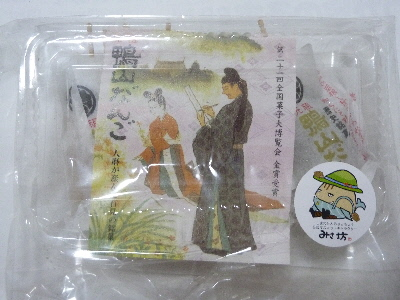
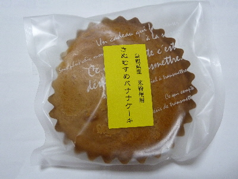
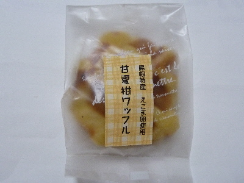
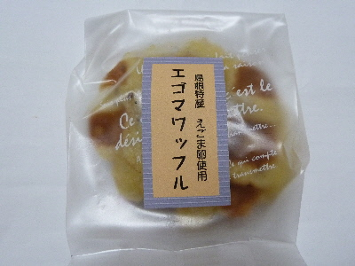

寿恵久仁屋さんの商品をいろいろ食べました。
2016/08/07
美郷町に行ったので、地元のお菓子をいろいろ買って帰りました。

元祖 鴨山だんご（人麿が産んだ石見の銘菓） です。
普通のおだんご5個とよもぎ味のお団子3個が入っていました。
くるみが入っていて美味しかったです。

きぬむすめバナナケーキです。
美郷町はきぬむすめの生産が盛んなんでしょうか。
米粉使用のせいか、ちょっと変わった食感のケーキでした。
バナナ風味は強かったです。


小さいワッフルです。
甘めなので、おやつに丁度よさそうでした。
島根県邑智郡美郷町粕淵１７８－１
御菓子司 寿恵久仁屋